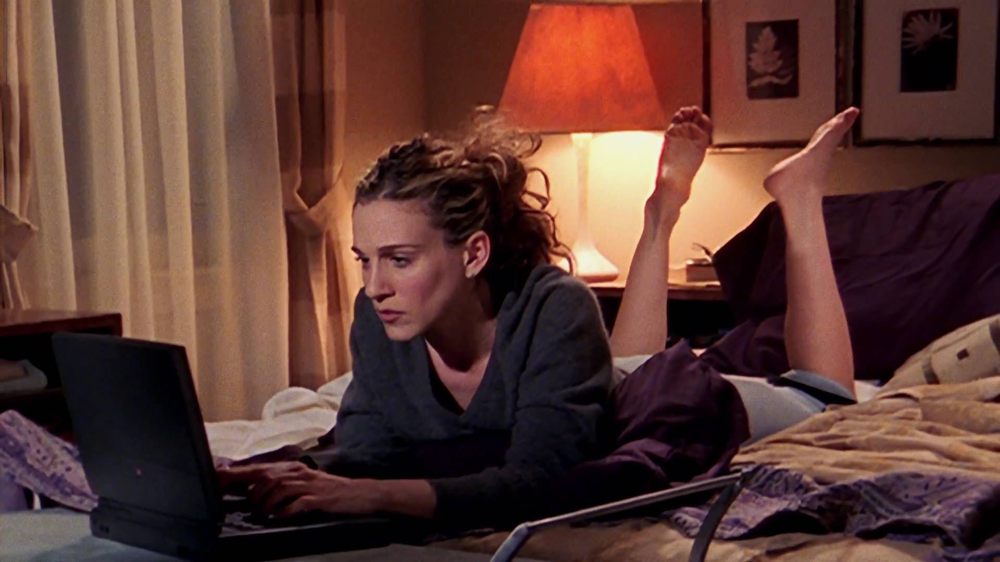

Journal entry goes here...
J.R. CARPENTER, A HANDMADE WEB:
In this article, Carpenter talks about the idea of “handmade web” and how it takes up space in today’s society. Carpenter correlates handmade web to handmade print materials. They believe that people are nostalgic for the “diy nature” of handmade web due to the chaotic nature of the current internet space. They also argue that in today’s society, it becomes “an increasingly radical act to hand-code and self publish experimental web art and writing projects”. I think this is an interesting argument and it gives me a new perspective to the world of web design. I am currently taking a UX design course, and I can definitely see the loss of uniqueness in web design. Everything is so centered around the need for monetization and bombarding users.
Quotes I enjoyed:
“These are not artifacts of a dead web but rather, signposts on a map of a living web pointing to a web as it once was, a web in progress, a web in the making."
"Drawing attention to both the manual labor involved in the composition of web pages, and the functioning of web pages itself as a manual, a handbook, a set of instructions required for a computer program to run.”
LAUREL SCHWULST, MY WEBSITE IS A SHIFTING HOUSE:
In this article, the author challenges the idea of what a website is and what it can be. They compare a website to a room, shelf, garden, and puddle. These comparisons give me a new perspective on how a person can interact with a website and also how the creator can build one. They argue that the web is simply what we make it to be.
Quotes I enjoyed:
"My favorite aspect of websites is their duality: they’re both subject and object at once."
"A website, or anything interactive, is inherently unfinished."
URSULA K. LE GUIN, A RANT ON TECHNOLOGY
In this writing, the author goes on a rant about the way society views "technology". She argues that technology is not just the "hi tech" gadgets we often think of. Instead, she argues that technology is any human tool that we use to interact with the world.
Quotes I enjoyed:
"We have been so desensitized by a hundred and fifty years of ceaselessly expanding technical prowess that we think nothing less complex and showy than a computer or a jet bomber deserves to be calledʺtechnology ʺ at all."
"I donʹt know how to build and power a refrigerator, or program a computer, but I donʹt know how to make a fishhook or a pair of shoes, either. I could learn. We all can learn. Thatʹs the neat thing about technologies. Theyʹre what we can learn to do"